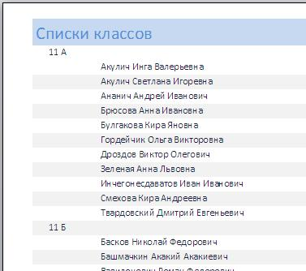

|
Справились? Отлично! Тогда продолжайте заниматься самообразованием
далее.
- Откройте эту папку и скопируйте базу данных DB_6.txt
Сохраните базу с именем 11Ф_NN_DB_6.accdb. Это вариант базы "Экзамены".
Обратите внимание на расширение имени - accdb !
- Изучите структуру таблиц
- Создайте запрос "Результаты экзаменов", содержащий результаты всех экзаменов всех учеников по всем классам. Укажите, по каким предметам сдавались экзамены.
- Создайте отчет "Результаты экзаменов", сгруппированный по классам.
- Создайте отчет "Результаты экзаменов по предметам", сгруппированный по предметам.
- Создайте запрос "Экзамены, сданные 7 июня", содержащий результаты всех экзаменов, сданных 7 июня. Результаты должны содержать класс, фамилию, имя ученика, предмет, по которому сдавался экзамен и результат этого экзамена.
- Создайте отчет "Экзамены, сданные 7 июня", сгруппированный по предметам.
- Создайте запрос "Экзамены, сданные учениками 11 А класса". Запрос должен содержать фамилию, имя ученика, предмет и оценку за экзамен по этому предмету.
- Создайте отчет "Экзамены, сданные учениками 11 А класса", сгруппированный по ученикам.
- Создайте отчет "Экзамены, сданные учениками 11 А класса по предметам", сгруппированный по предметам.
- Создайте запрос с параметром "Экзамены в указанный день", содержащий результаты всех экзаменов, сданных во вводимый день указанным классом. Результаты должны содержать фамилию, имя, предмет, по которому сдавался экзамен. В шапке отчета указывается дата и класс.
- Создайте отчет с параметром "Экзамены в указанный день", сгруппированный по ученикам.
- Создайте отчет с параметром "Экзамены в указанный день по предметам", сгруппированный по предметам.
- Создайте запрос "Списки учеников" , отчёт по которому выглядит следующим образом:

(Отчёт в подтверждение выполнения задания желателен.)
- Создайте запрос "Сведения об экзаменах" содержащий списки учеников с указанием предметов, по которым они сдавали экзамены.
- Создайте отчет с "Сведения об экзаменах", сгруппированный по ученикам.
- Создайте отчет с "Сведения об экзаменах", сгруппированный по предметам.
- Создайте отчет с "Сведения об экзаменах", сгруппированный по классам и по предметам.
|